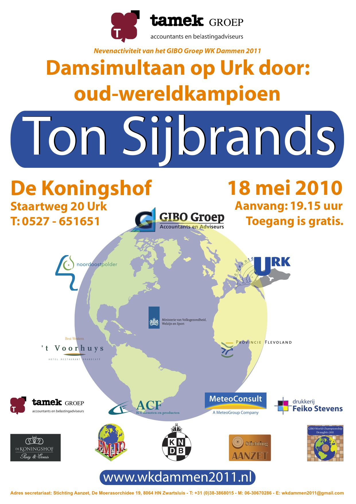

Ton Sijbrands scoort 87,5% bij kloksimultaan
Oud-wereldkampioen Ton Sijbrands was dinsdagavond 18 mei 2010 te gast op Urk. De oud-wereldkampioen nam het in de Amalia-zaal van De Koningshof op tegen twaalf dammers uit de Noordoostpolder en Urk. Sijbrands haalde een score van 87,5%.
Drie spelers lukte het om Sijbrands remise af te dwingen te weten: Wiebe van der Wijk, Jaap Akse en Jacob Post. De bedenktijd bedroeg twee uur per persoon voor zestig zetten en daarna vijftien minuten per persoon voor 25 zetten.
Sprekers
IJsbrand Haven, voorzitter van Stichting Aanzet heette iedereen welkom in de prachtige Amalia-zaal van De Koningshof op Urk. In het bijzonder heette hij welkom wethouder Geert Post, sponsor Driek de Goede van Tamek accountants en belastingadviseurs, Ton Sijbrands, de media en de deelnemers. “NOC*NSF gaat niet voor een zesje, maar voor een acht”, hoorde Haven onlangs Erica Terpstra zeggen. Stichting Aanzet is niet voor een acht gegaan, maar voor een tien, door de beste dammer uit te nodigen voor de eerste nevenactiviteit van het GIBO Groep WK Dammen 2011 op Urk. Geert Post, (foto) wethouder van de gemeente Urk voerde namens de gemeente Urk het woord. Hij deelde mee dat op 9 september 2009 de heren Joop Kip, Bart Jonker en Henk Boers in gesprek kwamen met wethouder Klaas Kramer. Zij waren van plan om het WK Dammen 2011 in de gemeente Noordoostpolder en op Urk te organiseren. Het voornemen zag er goed uit en al snel besloot het College van de gemeente Urk om positief op het subsidieverzoek aan de gemeente Urk te reageren. Samen met de gemeente Noordoostpolder en de provincie Flevoland en een aantal sponsors is het gelukt om het WK Dammen 2011 op Urk en in de Noordoostpolder te organiseren. Voor beide gemeenten is het de eerste keer dat er een WK binnen de gemeente plaatsvindt. Post vond het prettig om Ton Sijbrands welkom te kunnen heetten op Urk. Hij wenste de spelers en Sijbrands veel succes toe.
Geert Post, (foto) wethouder van de gemeente Urk voerde namens de gemeente Urk het woord. Hij deelde mee dat op 9 september 2009 de heren Joop Kip, Bart Jonker en Henk Boers in gesprek kwamen met wethouder Klaas Kramer. Zij waren van plan om het WK Dammen 2011 in de gemeente Noordoostpolder en op Urk te organiseren. Het voornemen zag er goed uit en al snel besloot het College van de gemeente Urk om positief op het subsidieverzoek aan de gemeente Urk te reageren. Samen met de gemeente Noordoostpolder en de provincie Flevoland en een aantal sponsors is het gelukt om het WK Dammen 2011 op Urk en in de Noordoostpolder te organiseren. Voor beide gemeenten is het de eerste keer dat er een WK binnen de gemeente plaatsvindt. Post vond het prettig om Ton Sijbrands welkom te kunnen heetten op Urk. Hij wenste de spelers en Sijbrands veel succes toe.
Driek de Goede, vennoot van Tamek accountants en belastingadviseurs dankte de organisatie voor de uitnodiging. Hij noemde Sijbrands ooit “de Cruijff onder de dammers”. Bij de loting van het WK Dammen 2003 in Zwartsluis trok Sijbrands lotnummer toevallig ook nog nummer veertien! De Goede betreurt het dat de damsport door het grote publiek, volledig ten onrechte, ondergewaardeerd wordt. De Goede bood Sijbrands het boek aan “Beleef De Wieden” van de wereldberoemde fotograaf Paul van Gaalen als herinnering aan het gebied waar Sijbrands als jongen zijn vakanties doorbracht.
Openingszet
De Goede deelde mee dat hij uitgenodigd was om de openingszet te verrichten, maar het leek hem mooier om dit door de tachtigjarige Marinus Moorman uit Zwartsluis te laten doen (zie foto). Moorman was een van de eersten die in 1961 de elfjarige Sijbrands al meedeelde dat hij ooit wereldkampioen zou worden. Sijbrands verbracht zijn vakanties bij zijn vader door aan boord van de zandzuiger waar Moorman eveneens werkzaam was. Moorman was daardoor in de gelegenheid om vele partijen met de jonge Sijbrands te spelen. Onder het toeziend oog van een aantal fotografen en van de camera van Omroep Flevoland verrichtte Moorman de openingszet aan het bord van Wiebe van der Wijk. Stichting Aanzet was bijzonder blij dat Piet Bouma aanwezig was. Hij zette de partijen semi-live op zijn website toernooibase.nl. Deze eerste nevenactiviteit was niet alleen sportief maar ook sociaal een hoogtepunt in aanloop naar het GIBO Groep WK Dammen 2011.
Stichting Aanzet was bijzonder blij dat Piet Bouma aanwezig was. Hij zette de partijen semi-live op zijn website toernooibase.nl. Deze eerste nevenactiviteit was niet alleen sportief maar ook sociaal een hoogtepunt in aanloop naar het GIBO Groep WK Dammen 2011.
De partijen
Menko van Dijk kwam met een enorm centrum uit de opening terwijl Sijbrands de randvelden bezette. Toen Van Dijk het kerkhofveld bezette werd dit zodanig door Sijbrands omsingeld dat Van Dijk zich al na achttien zetten gewonnen moest geven. Op dat moment kon hij niet meer aan schijfachterstand ontkomen. Na afloop van de partij gaf Sijbrands aan Van Dijk de tip om de partij nog ingewikkelder te maken door op tijd een tweede voorpost in te nemen.
Lauran Rijk vergat zijn linkervleugel te ontwikkelen. Hij bood Sijbrands de kans om deze vleugel volkomen vast te zetten. Rijk probeerde een centrumaanval op te zetten maar die werd door Sijbrands vakkundig afgeslagen. Sijbrands kwam op schijfvoorsprong wat voldoende was voor winst.
Jaap Akse speelde een prima gesloten klassieke partij. In het middenspel werd hij van het centrum verdrongen. Sijbrands nam een voorpost in, maar Akse hield de stand overzichtelijk en vlocht een fraaie remiseforcing in het eindspel.
Arie Hoonstra bleef van uit een gesloten klassieke opening met een achtergebleven schijf zitten. In het middenspel richtte Sijbrands zijn aanval op de verzwakte rechtervleugel van Hoonstra. In een stand met ieder tien schijven kwam Hoonstra een tempo tekort om de verdediging orde op te brengen.
Jan Snijder kwam goed uit de opening. In het middenspel kreeg Sijbrands voordeel. Hij omsingelde het centrum van Snijder. Sijbrands vlocht een dubbele dreiging in de stand. De ene damcombinatie zag Snijder, maar de tweede zag hij over het hoofd.  Jacob Poortinga kreeg vanuit de opening een omsingeling van zijn centrum voorgeschoteld. In het middenspel forceerde Sijbrands schijfwinst wat hem uiteindelijk de overwinning bracht.
Jacob Poortinga kreeg vanuit de opening een omsingeling van zijn centrum voorgeschoteld. In het middenspel forceerde Sijbrands schijfwinst wat hem uiteindelijk de overwinning bracht.
Klaas Veldstra speelde een gesloten klassieke opening waarbij zijn linkervleugel verzwakt werd. Sijbrands offerde een schijf en zette Veldstra in de kettingstelling en vervolgens werd het gehele centrum volledig vastgezet.
Alex Boxum liet zijn rechtervleugel vanuit de opening vrijwillig opsluiten. De risicovolle partijopzet werd nog ingewikkelder toen Boxum ook het kerkhofveld bezette. Sijbrands nam een grote ruil die hem groot voordeel opleverde. Een damcombinatie besliste de partij in het voordeel van Sijbrands.
Wiebe van der Wijk (foto) is waarschijnlijk de sterkste speler van de provincie Flevoland. Hij kreeg van Sijbrands alle ruimte op het centrum. In het middenspel plaatste Van der Wijk een voorpost die door Sijbrands een paar keer werd aangevallen en tenslotte werd afgeruild, waarna tot remise werd besloten.
Jacob Post zette Sijbrands op de 13e zet in de hekstelling. In een vier om vier stand braken beiden door naar dam. Post moest op het laatst nog een kleine finesse ontwijken maar hij wikkelde het eindspel goed naar remise af. Verbluffend was dat Sijbrands de opening en het eindspel van de partij tegen Jacob Post feilloos reconstrueerde zodat ook die partij bewaard blijft.
Jan Marten van der Reest leek de voorpost van Sijbrands te bedreigen, maar Sijbrands had zijn verdediging goed op orde. Nadat Van der Reest de voorpost afgeruild had verkreeg Sijbrands licht voordeel wat hij later in winst omzette. IJsbrand Haven (foto) liet het centrum aan Sijbrands. Hij omsingelde de centrumaanval van Sijbrands. Langzaam maar zeker werd het terreinvoordeel van Sijbrands groter. In het late middenspel voerde Sijbrands een damcombinatie uit ten koste van twee schijven. Al snel moest Haven een schijf offeren en een tweede schijf werd door Sijbrands veroverd. Haven probeerde, met de vlag op vallen, nog remise uit het vuur te slepen. Omdat Haven de laatste zetten niet genoteerd had werden die nog even door Sijbrands ingevuld! Hieruit bleek dat Haven op de 57e zet op de klok had verloren. Sijbrands herinnerde zich een prachtige eindspelcompositie uit 1961 van R.C. Keller die in het eindspel van de partij tegen Haven op het bord had kunnen komen!
IJsbrand Haven (foto) liet het centrum aan Sijbrands. Hij omsingelde de centrumaanval van Sijbrands. Langzaam maar zeker werd het terreinvoordeel van Sijbrands groter. In het late middenspel voerde Sijbrands een damcombinatie uit ten koste van twee schijven. Al snel moest Haven een schijf offeren en een tweede schijf werd door Sijbrands veroverd. Haven probeerde, met de vlag op vallen, nog remise uit het vuur te slepen. Omdat Haven de laatste zetten niet genoteerd had werden die nog even door Sijbrands ingevuld! Hieruit bleek dat Haven op de 57e zet op de klok had verloren. Sijbrands herinnerde zich een prachtige eindspelcompositie uit 1961 van R.C. Keller die in het eindspel van de partij tegen Haven op het bord had kunnen komen!
“Het was een zware opgave”, deelde Sijbrands na afloop van de simultaan mee. Stichting Aanzet kan terugkijken op een geslaagd evenement. Op 18 december 2010 staat de volgende nevenactiviteit van het GIBO Groep WK Dammen 2011 gepland: de wereldrecordpoging kloksimultaan dammen door de uit Kameroen afkomstige Jean Marc Ndjofang in de Beurszaal van theater ’t Voorhuys te Emmeloord.
Omdat Sijbrands twaalf sterke tegenstanders voldoende vond nam Bart Jonker het op tegen de overige negen spelers, waaronder vier jeugdspelers van DC Emmeloord. Hij won zeven partijen en speelde twee keer remise. Zijn tegenstanders waren: Wendy Vreeken, Lennart Simonse, Rik Jongbloed, Geert Kroeze, A. Withaar (80 jaar), Douwe Veenstra (87 jaar), Bert de Graaf, Jan van der Reest en Ton Coenen. De twee laatstgenoemden speelden remise.
Zie verder: http://www.omroepflevoland.nl/Sport/70806/ton-sijbrands-geeft-damles
